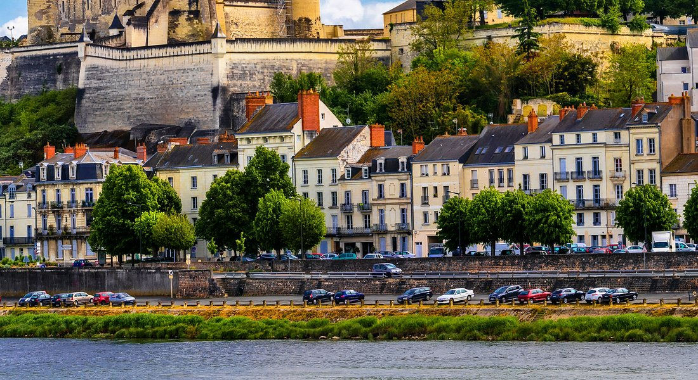
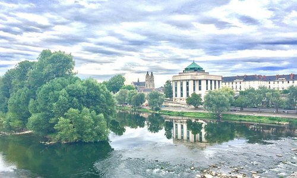
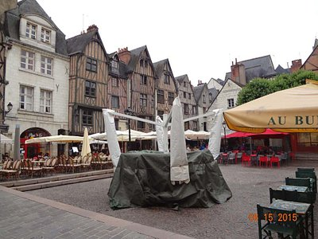
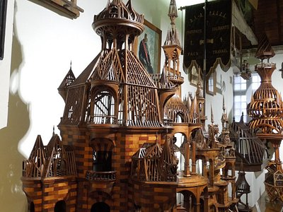
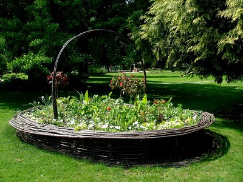

Explorez Tours


Visiter : Tours
Tours : les immanquables
Cathédrale Saint-Gatien
2089Bâtiments architecturaux, Sites historiques

Place Plumereau
1392Bâtiments architecturaux, Sites historiques

Musée du Compagnonnage
614Musées spécialisés

Jardin Botanique de Tours
542Jardins

Basilique Saint Martin
478Monuments & Points d'intérêt
Hôtel de Ville de Toursn
443Bâtiments gouvernementaux